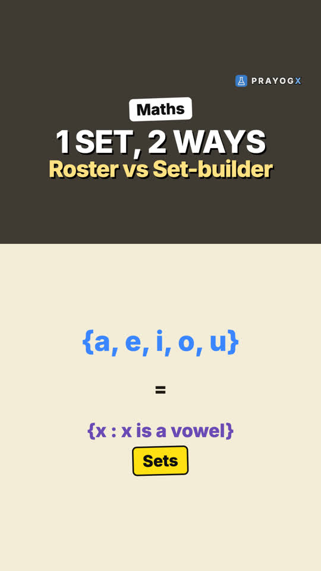

Chapter 1 · Mathematics
Sets: Chapter Introduction
Video not playing? YouTube
A set is a well-defined collection: anyone can decide whether a thing belongs to it or not. The chapter builds the language of sets that the rest of mathematics uses.
Download the short notesPDF, 171 KB · solved examples, practice set and answer key Download the workbook
PDF, 179 KB · fill in the blanks, true/false, assertion-reason, MCQ, numericals, short answer, match the columns; detailed solutions at the end Up next in this chapter

Roster Form and Set-builder FormTwo ways to write one set: Roster form lists the elements, Set-builder form states their common property. When to use each.Mathematics · simulationKey points
- A set is a well-defined collection of objects.
- "Best cricketers" is not a set; "months starting with J" = {January, June, July} is.
- Notation: A = {2, 4, 6, 8, 10}; 4 ∈ A (4 belongs to A).
- Sets can be empty, finite or infinite; union and intersection are shown on Venn diagrams.
What makes a collection a set
A collection is well-defined when, for any object, we can say for certain whether it belongs to the collection or not.
| Collection | Set? | Why |
|---|---|---|
| Best cricketers of India | No | "Best" depends on opinion |
| Months whose names start with J | Yes | Exactly January, June, July |
| Even natural numbers from 1 to 10 | Yes | Exactly 2, 4, 6, 8, 10 |
Writing sets
- Sets are named with capital letters, elements are written inside curly brackets { }.
- Roster form: A = {2, 4, 6, 8, 10}.
- Set-builder form: A = {x : x is an even natural number, x ≤ 10}.
- 4 ∈ A means 4 belongs to A; 5 ∉ A means 5 does not.
Types and operations
| Idea | Example |
|---|---|
| Empty set ∅ | {x : x is a natural number less than 1} |
| Finite set | {a, e, i, o, u} |
| Infinite set | N = {1, 2, 3, …} |
| Union A ∪ B | everything in A or B (or both) |
| Intersection A ∩ B | only what is common to A and B |
A = {1, 2, 3}, B = {2, 3, 4}: A ∪ B = {1, 2, 3, 4}, A ∩ B = {2, 3}
What the chapter covers
- Sets and their representations; empty, finite, infinite and equal sets.
- Subsets, power set, universal set.
- Venn diagrams; union, intersection, difference and complement of sets.
Quick quiz
4 questions. Choose an answer for each, then submit to see your score and the explanations.